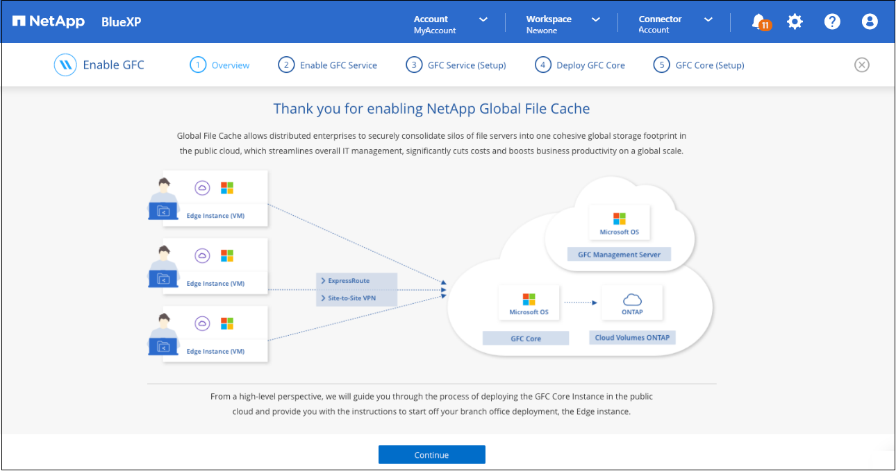
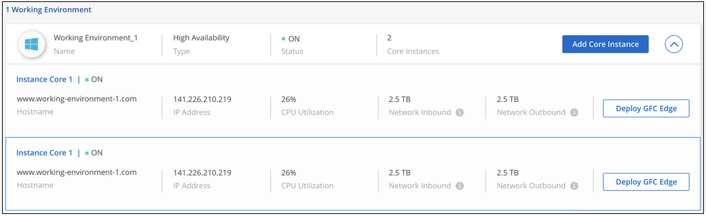

Solicitar cambios en el documento
Solicitar cambios en el documento Editar en GitHub
Editar en GitHub Guía del colaborador
Guía del colaboradorPrimeros pasos
Colaboradores
Utilice BlueXP para implementar el servidor de administración de caché de archivos global y el software de núcleo de caché de archivos global en el entorno de trabajo.
Active la caché global de archivos con BlueXP
En esta configuración, implementará el servidor de administración global de caché de archivos y el núcleo de caché global de archivos en el mismo entorno de trabajo en el que creó el sistema Cloud Volumes ONTAP con BlueXP.
Ver "este vídeo" para ver los pasos de principio a fin.
Inicio rápido
Empiece rápidamente siguiendo estos pasos o desplácese hacia abajo hasta las secciones restantes para obtener todos los detalles:
 Ponga en marcha Cloud Volumes ONTAP
Ponga en marcha Cloud Volumes ONTAPPonga en marcha Cloud Volumes ONTAP en Azure o AWS y configure los recursos compartidos de archivos de SMB. Para obtener más información, consulte "Inicio de Cloud Volumes ONTAP en Azure" o. "Inicio de Cloud Volumes ONTAP en AWS".
 Implemente el servidor de gestión global de caché de archivos
Implemente el servidor de gestión global de caché de archivosImplemente una instancia del servidor de administración de caché de archivos global en el mismo entorno de trabajo que la instancia de Cloud Volumes ONTAP.
 Implemente el núcleo de caché global de archivos
Implemente el núcleo de caché global de archivosImplementar una instancia, o varias instancias, del núcleo de caché de archivos global en el mismo entorno de trabajo que la instancia de Cloud Volumes ONTAP y unirlo al dominio de Active Directory.
 Memoria caché de archivos global de licencias
Memoria caché de archivos global de licenciasConfigure el servicio de servidor de gestión de licencias (LMS) de caché global de archivos en una instancia de núcleo de caché global de archivos. Necesitará sus credenciales de NSS o un ID de cliente y número de suscripción que proporciona NetApp para activar su suscripción.
 Implemente las instancias de Global File Cache Edge
Implemente las instancias de Global File Cache EdgeConsulte "Implementación de instancias globales de File Cache Edge" Para implementar las instancias de Global File Cache Edge en cada ubicación remota. Este paso no se realiza utilizando BlueXP.
Ponga en marcha Cloud Volumes ONTAP como su plataforma de almacenamiento
En la versión actual, la caché de archivos global es compatible con Cloud Volumes ONTAP implementado en Azure o AWS. Para obtener detalles sobre los requisitos previos, los requisitos y las instrucciones de puesta en marcha, consulte "Inicio de Cloud Volumes ONTAP en Azure" o. "Inicio de Cloud Volumes ONTAP en AWS".
Tenga en cuenta los siguientes requisitos adicionales de caché global de archivos:
-
Debe configurar los recursos compartidos de archivos SMB en la instancia de Cloud Volumes ONTAP.
Si no hay recursos compartidos de archivos SMB configurados en la instancia, se le pedirá que configure los recursos compartidos SMB durante la instalación de los componentes de Global File Cache.
Habilite la caché global de archivos en el entorno de trabajo
El asistente de caché global de archivos le guía por los pasos para implementar la instancia de servidor de gestión global de caché de archivos y la instancia de núcleo de caché global de archivos, como se indica a continuación.

-
Seleccione el entorno de trabajo en el que ha implementado Cloud Volumes ONTAP.
-
En el panel Servicios, haga clic en Activar GFC.

-
Lea la página Descripción general y haga clic en continuar.
-
Si no hay recursos compartidos de SMB disponibles en la instancia de Cloud Volumes ONTAP, se le pedirá que introduzca los detalles de SMB Server y SMB Share para crear el recurso compartido ahora. Para obtener más detalles sobre la configuración SMB, consulte "Plataforma de almacenamiento dinámica".
Cuando termine, haga clic en continuar para crear el recurso compartido SMB.

-
En la página Global File Cache Service, introduzca el número de instancias de Global File Cache Edge que tiene previsto implementar y, a continuación, asegúrese de que el sistema cumple los requisitos de las reglas de configuración de red y firewall, la configuración de Active Directory y las exclusiones de antivirus. Consulte "Requisitos previos" para obtener más detalles.

-
Después de verificar que se han cumplido los requisitos o que tiene la información necesaria para cumplir estos requisitos, haga clic en continuar.
-
Introduzca las credenciales de administrador que utilizará para acceder a la VM del servidor de gestión de caché de archivos global y haga clic en Activar GFC Service. Para Azure, debe introducir las credenciales como nombre de usuario y contraseña; para AWS, seleccione la pareja de claves adecuada. Es posible cambiar el nombre de la máquina virtual/instancia si se desea.

-
Después de implementar correctamente el servicio de administración de caché de archivos global, haga clic en continuar.
-
Para Global File Cache Core, introduzca las credenciales de usuario admin para unirse al dominio de Active Directory y las credenciales de usuario de la cuenta de servicio. A continuación, haga clic en continuar.
-
La instancia núcleo de caché de archivos global debe implementarse en el mismo dominio de Active Directory que la instancia de Cloud Volumes ONTAP.
-
La cuenta de servicio es un usuario de dominio y forma parte del grupo BUILTIN\operadores de copia de seguridad de la instancia de Cloud Volumes ONTAP.

-
-
Introduzca las credenciales de administración que utilizará para acceder a la VM principal de caché de archivos global y haga clic en implementar GFC Core. Para Azure, debe introducir las credenciales como nombre de usuario y contraseña; para AWS, seleccione la pareja de claves adecuada. Es posible cambiar el nombre de la máquina virtual/instancia si se desea.

-
Una vez que el núcleo de caché de archivos global se haya implementado correctamente, haga clic en vaya a Dashboard.

El Panel muestra que la instancia de Management Server y la instancia de Core son on y están funcionando.
Licencia de la instalación de Global File Cache
Para poder utilizar Global File Cache, debe configurar el servicio Global File Cache License Management Server (LMS) en una instancia de Global File Cache Core. Necesitará sus credenciales de NSS o un ID de cliente y un número de suscripción proporcionados por NetApp para activar su suscripción.
En este ejemplo, configuraremos el servicio LMS en una instancia Core que acaba de poner en marcha en la nube pública. Este es un proceso único que configura el servicio LMS.
-
Abra la página Registro de licencias de la caché global de archivos en el núcleo de la caché global de archivos (el núcleo que está designando como servicio LMS) mediante la siguiente URL. Sustituya <dirección_ip> por la dirección IP de Global File Cache Core:https://<ip_address>/lms/api/v1/config/lmsconfig.html[]
-
Haga clic en * “continuar a este sitio web (no recomendado)”* para continuar. Se muestra una página que permite configurar el LMS o comprobar la información de licencia existente.

-
Seleccione el modo de registro:
-
“NetApp LMS” se utiliza para los clientes que han adquirido licencias de NetApp Global File Cache Edge a NetApp o a sus partners certificados. (Preferido)
-
La opción «LMS heredado» se utiliza para clientes existentes o de prueba que hayan recibido un ID de cliente a través del servicio de soporte de NetApp. (Esta opción quedó obsoleta).
-
-
Para este ejemplo, haga clic en NetApp LMS, introduzca su ID de cliente (preferiblemente su dirección de correo electrónico) y haga clic en Register LMS.

-
Compruebe si hay un correo electrónico de confirmación de NetApp que incluya su número de suscripción de software GFC y su número de serie.

-
Haga clic en la pestaña NetApp LMS Settings.
-
Seleccione GFC License Subscription, introduzca su número de suscripción de software GFC y haga clic en Enviar.

Verá un mensaje que indica que la suscripción a la licencia de GFC se ha registrado correctamente y se ha activado para la instancia de LMS. Las compras posteriores se agregarán automáticamente a la suscripción a la licencia de GFC.
-
Opcionalmente, puede hacer clic en la pestaña Información de licencia para ver toda la información de licencia GFC.
Si ha determinado que necesita implementar varios núcleos de caché global de archivos para admitir su configuración, haga clic en Agregar instancia principal en el Panel de control y siga el asistente de implementación.
Una vez finalizada la implementación básica, debe hacerlo "Implemente las instancias de Global File Cache Edge" en cada una de sus oficinas remotas.
Puesta en marcha de instancias de Core adicionales
Si su configuración requiere que se instale más de un núcleo de caché de archivos global debido a un gran número de instancias de Edge, puede agregar otro núcleo al entorno de trabajo.
Al implementar instancias de Edge, configurará algunos para que se conecten al primer núcleo y otros al segundo núcleo. Las dos instancias principales acceden al mismo almacenamiento de back-end (su instancia de Cloud Volumes ONTAP) del entorno de trabajo.
-
En el Panel de caché global de archivos, haga clic en Agregar instancia principal.

-
Introduzca las credenciales de usuario administrador para unirse al dominio de Active Directory y las credenciales de usuario de la cuenta de servicio. A continuación, haga clic en continuar.
-
La instancia núcleo de caché de archivos global debe estar en el mismo dominio de Active Directory que la instancia de Cloud Volumes ONTAP.
-
La cuenta de servicio es un usuario de dominio y forma parte del grupo BUILTIN\operadores de copia de seguridad de la instancia de Cloud Volumes ONTAP.
-
-
Introduzca las credenciales de administración que utilizará para acceder a la VM principal de caché de archivos global y haga clic en implementar GFC Core. Para Azure, debe introducir las credenciales como nombre de usuario y contraseña; para AWS, seleccione la pareja de claves adecuada. Puede cambiar el nombre de la máquina virtual si desea.
-
Una vez que el núcleo de caché de archivos global se haya implementado correctamente, haga clic en vaya a Dashboard.

El panel de control refleja la segunda instancia de Core para el entorno de trabajo.